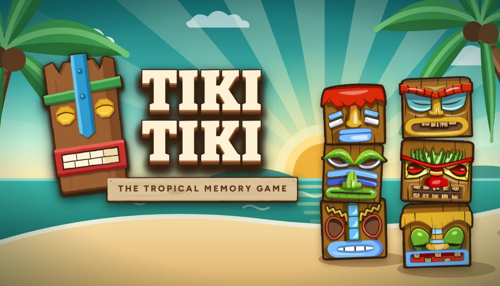

Diciembre
2026
2026
Relanzamiento en Steam
Tiki Tiki: The Tropical Memory Game
El juego de memoria de 2020 vuelve a Steam con muchos cambios y soporte para Steam Deck. Encuentra las parejas de tótems antes de que se acabe el tiempo.
- Plataforma
- Windows, macOS, Linux · Steam Deck
- Género
- Memoria / puzle casual